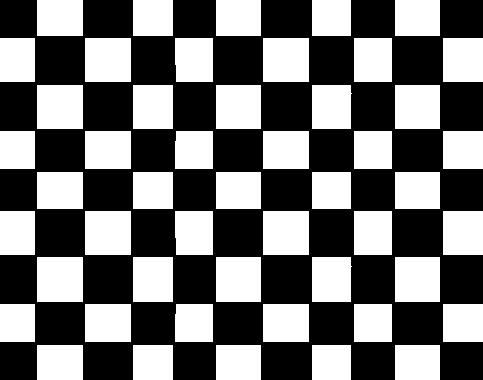

<div style="width:400px;height:300px;overflow:hidden;border:2px solid;transform-style:preserve-3d">
  <div style="perspective:400px;perspective-origin:center center;width:470px;margin-top:-190px;transform-style:preserve-3d">
    <div id=bg style="position:relative;transform:rotateX(75deg);transform-origin:center center;transform-style:preserve-3d">
      
      
    </div>
  </div>
</div>

Move with arrows / WASD / ZQSD
<script>

// Keys handler (see http://xem.github.io/articles/#jsgamesinputs)
u=r=d=l=0;
onkeydown=(e)=>k(e,1);
onkeyup=(e)=>k(e);
k=(e,v,l,i)=>{for(i in l={u:[38,90,87],r:[39,68],d:[40,83],l:[37,65,81]})if(l[i].includes(e.keyCode))top[i]=v}

// Init
tr_x = tr_y = ang_deg = ang_rad = 0;

// Loop
setInterval((e)=>{

  // Turn (in degrees)
  if(l) ang_deg += 3;
  if(r) ang_deg -= 3;
  
  // Convert angle in radians
  ang_rad = ang_deg * Math.PI / 180;
  
  // Go ahead / back
  if(u) tr_x += 10 * Math.sin(ang_rad), tr_y += 10 * Math.cos(ang_rad);
  if(d) tr_x -= 10 * Math.sin(ang_rad), tr_y -= 10 * Math.cos(ang_rad);
  
  // Apply position and angle to the map
  bg.style.transform = "rotateX(75deg) rotateZ("+ang_deg+"deg) translateX("+tr_x+"px) translateY("+tr_y+"px)";
},33)
</script>